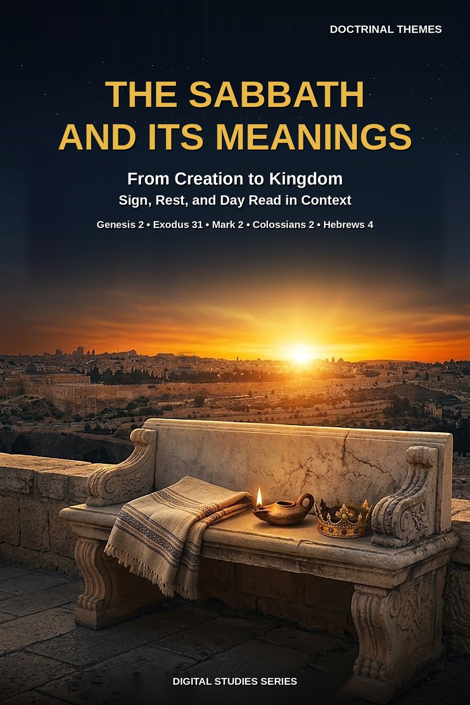
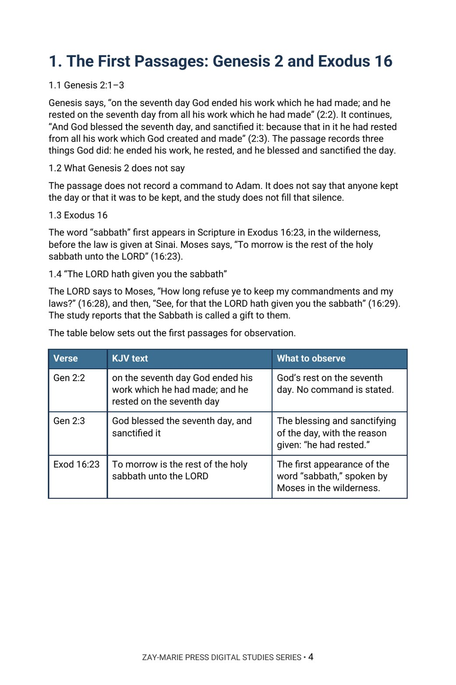

The Sabbath and Its Meanings
From Creation to Kingdom — Sign, Rest, and Day Read in Context
What does each passage that names the Sabbath say, to whom does it speak, and what does it leave unsaid?
The Sabbath appears in Genesis, at Sinai, in the prophets, in the Gospels, in Acts, and in letters to believers. Readers have drawn very different conclusions from it: a command for all people from creation, a day that moved, or a ceremony that ended.
This study reads each passage in its own setting, from Genesis 2 to Hebrews 4, and reports it as written. It records who is addressed, the reasons given, the signs and the days named, and holds to one order throughout: what the text says first, what it leaves unsaid second.
Read Each Passage Where It Stands
You will read Genesis 2:1–3 and Exodus 16, the command and the sign at Sinai, the law and the prophets, the Sabbath questions in the Gospels, the synagogue and the first day in Acts, and the letters of Paul and Hebrews 4. You will record who is addressed in each passage and test three common readings against the wording.
Readers who already own Study 27 (Israel’s Seven Appointed Feasts), Study 39 (The Church’s Relationship to Israel’s Scriptures), Study 59 (The Law’s Jurisdiction and the Body of Christ), or Study 51 (Circumcision) will recognize adjoining ground. Study 27 reads the weekly Sabbath inside Leviticus 23; this study reads the Sabbath across every passage that names it. Study 39 uses the Sabbath as one sample of a method; this study takes up the passages themselves. Study 59 reads the Law’s jurisdiction, which this study does not take up. Study 51 reads circumcision as a covenant sign, and this study reads the Sabbath’s own sign passages. The question this study alone answers: what does each passage that names the Sabbath say, to whom does it speak, and what does it leave unsaid?
How These Studies Relate
Study 78 reads the Sabbath passage by passage. The studies below supply the neighboring ground it deliberately does not repeat.
Study 27 — Israel’s Seven Appointed Feasts Read the weekly Sabbath inside Leviticus 23; Study 78 reads the Sabbath across every passage that names it.
Study 39 — The Church’s Relationship to Israel’s Scriptures Read a method that uses the Sabbath as one sample; Study 78 takes up the Sabbath passages themselves.
Study 59 — The Law’s Jurisdiction and the Body of Christ Read the Law’s jurisdiction; Study 78 does not take up that question.
Follow the Sabbath Through Its Own Passages
The First Passages
Read Genesis 2:1–3 and Exodus 16 in their order, noting what each passage records God doing and what each records the people being told.
Sinai
Trace the audience, the reasons and the duration the text names in Exodus 20:8–11, Exodus 31:12–17 and Deuteronomy 5:12–15.
Law and Prophets
Follow the Sabbath through Leviticus 23, Numbers 15, Isaiah 56 and 58, Ezekiel 20 and Nehemiah 13, recording who is addressed in each.
The Gospels
Read the Gospel accounts of Sabbath questions by noting who asks, what is asked and what Jesus says in answer.
Acts and the Letters
Compare Acts, 1 Corinthians 16:2, Romans 14, Galatians 4, Colossians 2, Hebrews 4 and Revelation 1:10 passage by passage, each in its own setting.
Common Readings Tested
Test three common readings against the wording, and practice reporting hard phrases exactly as written.
Read the Word in Its Context
Genesis 2:1–3
God’s rest on the seventh day, and the blessing and sanctifying of the day.
Exodus 16:22–30
The word “sabbath” first appears, in the wilderness.
Exodus 20:8–11
The command spoken at Sinai, with its reason.
Exodus 31:12–17
The sign, its audience and its duration.
Isaiah 56:1–7
The stranger who joins himself to the LORD, and the Sabbath.
Mark 2:23–28
A Sabbath question put to Jesus, and his answer.
Colossians 2:16–17
A list of days, with its own wording.
Hebrews 4:1–11
The rest, reported as the letter words it.
A Rule for Reading This Subject
Where a passage names an audience, a reason or a day, the study reports it. Where the passage is silent, the study leaves the silence in place and does not fill it from another passage.
Report what each passage says, to whom, and for what reason.
Preview the Study Before You Purchase
Click any page to enlarge it for reading.



The First Passages
See how the study begins with Genesis 2 and Exodus 16 and records what each passage says.
A Focused Study of the Sabbath Passages
16-Page Digital PDF
Approved cover and 15-page numbered interior.
7 Teaching Sections
A text-driven study from Genesis 2 to three common readings tested.
Callout Boxes
Five callout boxes marking the study’s key working rules.
KJV Tables
Seven tables setting out the key passages for observation.
Scripture-Tracing Exercise
Guided traces through the passages the study relies on.
Guided Further Study
Four passage groups for deeper reading.
Review Questions
Five questions testing the study’s markers and method.
Final Synthesis Exercise
A written synthesis drawing the whole study together.
The Sabbath and Its Meanings
16-page digital PDF · For personal use